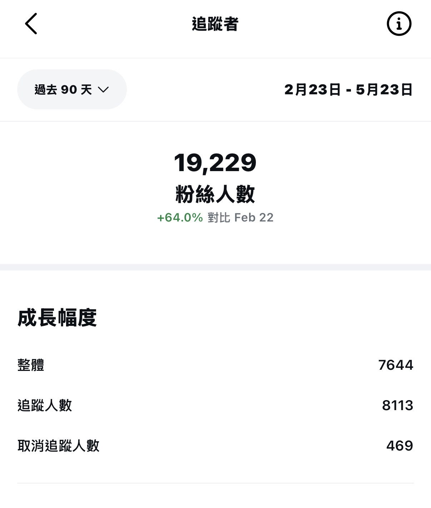
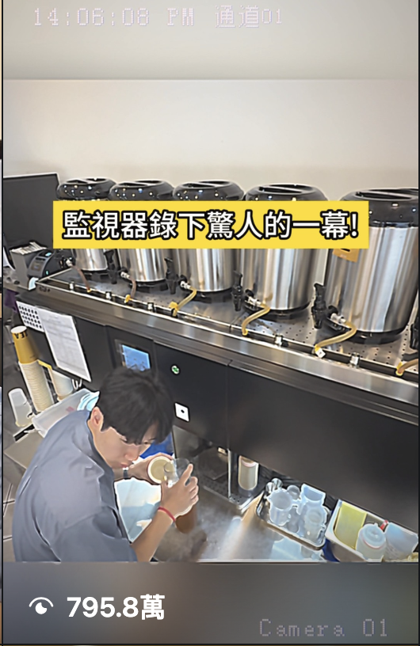
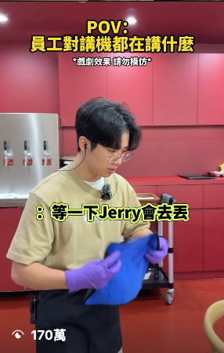
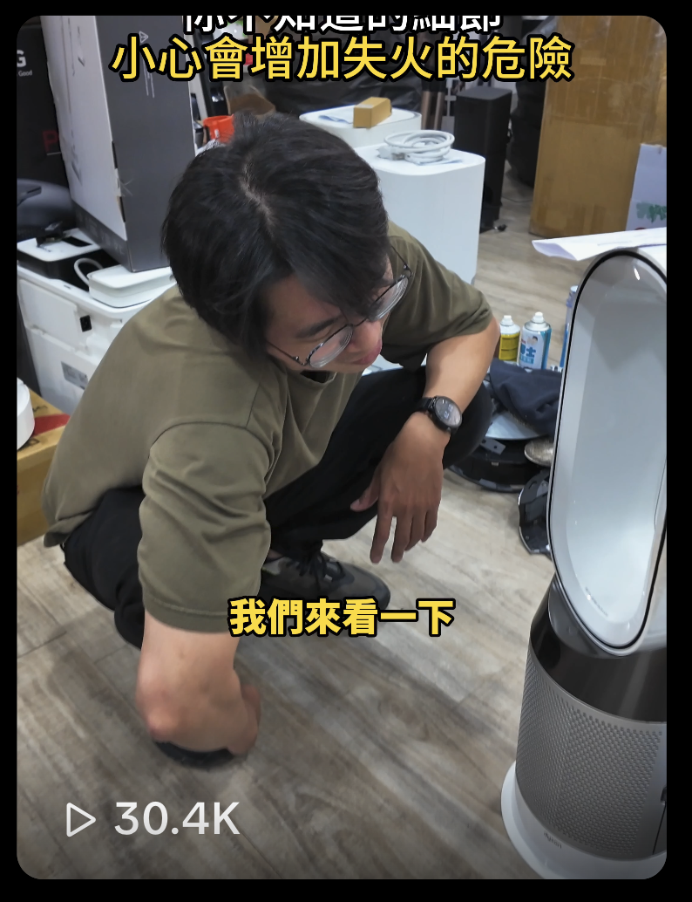

3 個月粉絲成長
協助品牌帳號快速累積受眾，建立穩定內容節奏。
3 個月粉絲成長
協助品牌帳號快速累積受眾，建立穩定內容節奏。
單支最高觀看
用清楚鉤子與節奏設計，放大短影音觸及。
數十支影片突破
持續測試題材、腳本與開場，提高爆款機率。
完整經營品牌帳號
完整經營 2 個品牌帳號，並經手 10 個帳號內容，熟悉不同帳號定位與節奏。
以內容企劃為核心，把社群節奏、平台語感、互動設計與 AI 工具整合成可持續執行的流程。
題材、鉤子、腳本節奏設計
貼文節奏、上片排程與帳號定位
設計 CTA，提升討論與參與
加速發想、整理素材與內容產出
把產品資訊轉成容易看懂的內容
依觀看、互動與留存調整下一支
以帳號成長、短影音腳本與活動操作為核心，整理可直接查看的代表作品。
3 個月 IG 粉絲增加近 8000
查看帳號



從目標確認到內容上線與成效優化，把創意執行整理成可追蹤、可迭代的工作節奏。
釐清品牌狀態、受眾、平台目標與目前內容痛點。
建立內容主軸，規劃短影音角度、鉤子與發布節奏。
整理腳本、分鏡與拍攝重點，讓產製流程更有效率。
安排上片、文案、留言 CTA，放大影片互動與活動討論。
回看觀看、互動、粉絲成長，整理下一輪內容調整方向。
歡迎與我聊聊短影音企劃、品牌社群經營、內容優化，或把 AI 工具導入日常內容流程。